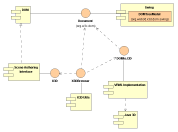

Xj3D Architecture
Author: Justin Couch
Last updated: $Date: 2001/04/30 09:03:44 $
Revision: $Revision: 1.5 $
Intro
Xj3D is a collection of code that implements the X3D specification to provide
a VRML and X3D browser. There are also many other goals in producing this
codebase. The motivation for the design decisions and architecture of the
underlying codebase is explained here.
Background
The basic codebase started with a donation from
Sun Microsystems'
Java 3D group in
1999. This code was a basic VRML 97 capable browser and simple viewer. Slow
progress on the codebase was aimed at providing more complete capabilities.
With the start of the X3D specification it was decided to use this codebase
as the basis for experimentating with how the specification could be
implemented. The new specification, having both the traditional UTF-8
encoding and an XML encoding, had a lot more flexibility. With XML, it would
provide the ability to access it using the web browser using the Document
Object Model. At the same time, there was a desire to merge the internal
scripting and external authoring interface with a more complete system.
Both had strengths, but also suffered significant weaknesses.
Motivation
Although the original codebase was aimed at just providing a browser to see
content with. While this is an acceptable goal, it was felt by some of the
developers that a wider set of goals for the code would also be useful to
help adoption of the new coming specification. Also, because the code was to
aid an experimental role of an unknown specification, it would pay to be as
flexible as possible.
In the architecture you see here, there are three primary goals:
- Provide proof that the full VRML 2K+n specification can be implemented.
- Build code to encourage working groups to experiment with extensions.
- Encourage adoption of the specification by dividing the code into a lot
of smaller reusable components that can be incorporated into other
applications.
From this, you can see that performance is not a goal of this codebase. We
do attempt to provide efficient implementation of algorithms, but it is not
the primary motivator of the architecture. We do not pretend to present a
high performance browser implementation. If you require this, then we suggest
that you purchase one of the commercial browsers available.
Structural Overview
The structural overview will provide a description of the basic components,
why they are this way and how they relate to each other. A description of
each component with more detail is found in the
Component Summary section.
Figure 1 presents the UML component diagram of the main parts of the
architecture. Each component represents something that could be taken
as a separate piece and used within an application. Although it would be
possible to use smaller parts of a given component, the design does not
cater to this use as it is prefered to use the larger parts.

Figure 1: UML Component Diagram of the Xj3D Architecture
We break the components into areas that represent a distinct set of
functionality that may operate standalone. As you can see from the diagram,
the glue component is X3D Utils. This uses the facilities of all the other
components to build a larger single component for use by applications.
At the bottom of the heap we have the DOM model implementation. As X3D is
XML and DOM representations seem to be the defacto way of looking at the
document content, this provides the facilities to build everything else.
There are many ways that a user may want to use the content of an X3D
document. Users may want to see the X3D document in a 3D window, so a
component is provided to convert from the DOM representation to a renderable
form (in the current implementation it uses Java 3D). At other times, 2D
components are wanted, so a number of Swing based components are provided
to show and interact with the DOM items.
From the VRML perspective, we also need the SAI access to the scenegraph
presented by X3D. There are two forms of the SAI interfaces provided by the
standard - a clean version with no sub-dependencies, and one that shows the
recommended combination of DOM and SAI interfaces. Our implementation uses
the second to provide a combination of SAI and DOM code as a single class,
so the SAI package extends the basic DOM code with the extra functionality.
Finally, as we mentioned earlier, for many people, they want to just embed
a VRML browser into the scene and just have everything "work". To do this,
we have a set of utility classes and the X3DBrowser in the utils component
that brings all of these other pieces of functionality into a single easy
to use interface.
Component Summaries
In the following sections we give a brief outline of each component and what
it does. In a future revision of this document, it will include links to
much more detailed documentation for each component.
The DOM component provides a complete DOM builder code that conforms to the
JAXP interface. It uses the standard SAX parser to build a custom DOM with
many extra capabilities over the standard provided system.
Two features are of most importance - customisablity that is not linked to
X3D specific features and DOM Level 2 event implementation. The first feature
is provided by some JAXP implementations, but not guaranteed in all of them,
while the second feature is not implemented as far as we are aware in any of
the standard systems. DOM Events are very important from an X3D perspective
as they are the way that we can inform a programmer of something that has
changed in the document such as a field change or nodes added/removed.
The VRML implementation layer provides an abstraction over the underlying
rendering engine. Through a collection of convenience classes, this component
maps individual VRML nodes to a collection of renderable classes. The current
code only provides DOM to rendering component, but there is no reason why
we could not also layer other representations such as a binary encoding
scheme or MPEG 4 BIFS.
This section is currently being re-written. The majority of the structure is
there and only some minor tweaking of classes is needed. However, at the
current stage, not all the code has swapped over to the new structure. Only
the UTF8 parsing code uses this. The DOM implementation does not yet use the
new code and is dependent on the original core implementation. This is an
active area of development and we expect to have the situation rectified soon.
As was noted earlier, the SAI componet implementation provided here layers
itself over the top of the DOM code. We can do this using the combined
DOM-SAI interfaces. What this component gives you is an ability to create
a DOM, and then cast the classes to the SAI interfaces. You can change values
using either API set and see them reflected in the other. What it does not
give you is SAI access to a rendered object. If you need that, you will need
to hook this code to either the 3D or 2D renderers.
The SAI code is currently very much under development. The API is changing
quite rapidly as we experiment with it and so this structure may change without
warning.
Java 3D
At the lowest level of 3D graphics rendering, we are using Java 3D. As both as
scenegraph APIs, there is a lot of similarities between the two. The component
here provides a thinner layer over the top of the standard Java 3D API set to
match it closer to the VRML requirements. For example, the basic J3D primitive
is the polygon, where in VRML there are complex primitives like sphere, cone
and box.
One of the features of the latest specification is the profiling support to
easily add extension capabilities. One of the more interesting ones is the
splined surface extensions using NURBS. This component will provide these
simple implementations to enable the higher level use at the VRML level.
Many applications don't want to restrict X3D information to just 3D land. In
applications like editors and data visualisers, a 2D view of the data is
wanted as well. This component provides a number of useful utility classes
for use within a Swing environment.
Within the current code, we are staying to the lower level DOM classes. That
is, all the components presented here will work with any DOM tree passed to
it. There is no requirement to use X3D trees. In is envisaged that in the
future X3D specific components will be added to the mix here.
X3D Utils
Our final component provides us with a number of utility classes. Some may
be used stand alone, while others provide a glue capability for all the other
components.
References